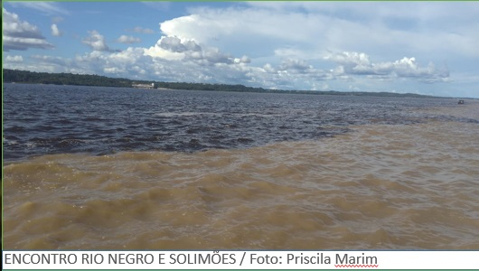
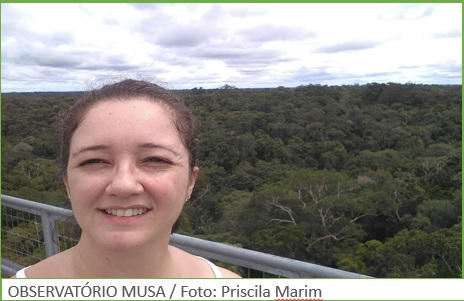
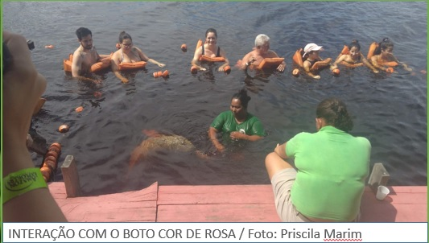

SABORES DA AMAZÔNIA
Os pratos regionais são a base de peixe e frutos da região. O peixe
pirarucu é o mais emblemático da Amazônia e oferecido em
muitos pratos. Um dos pratos mais famosos desta aventura
gastronômica é o Tacacá e a Tapioca com Tucumã.